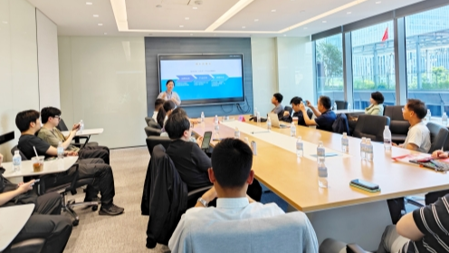
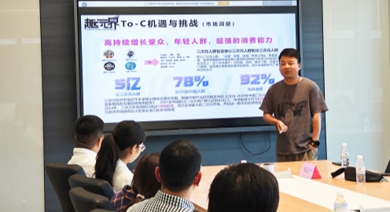
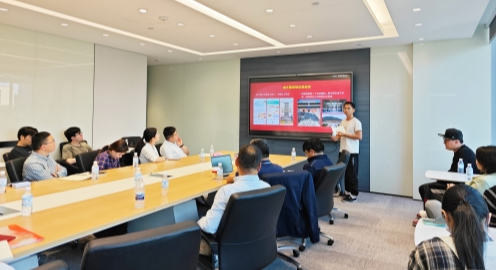
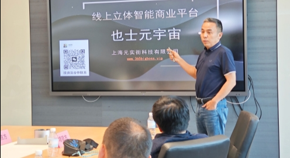
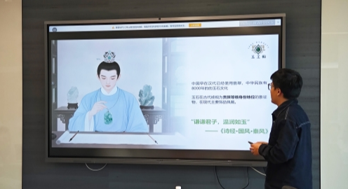
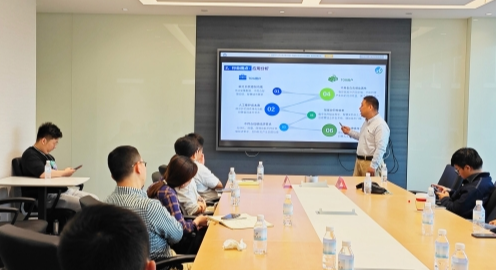

5月29日，上海虹桥商务区恒生云谷国际创新中心内气氛热烈，第14期“恒创中国投融资路演”活动在此举办。活动汇聚了数十家投资机构与涵盖二次元文化、国学数字化、智能平台、玉石电商、环保科技等领域的优质项目方，现场思维碰撞频繁，资方为创业者提供了大量建设性意见，展现了资本与创新深度对接的活力。

活动伊始，恒生云谷活动发起人李莎以饱满的热情介绍了平台的使命：“恒创中国路演始终致力于打破信息壁垒，为早期项目提供展示舞台，为资本挖掘‘潜力股’。”她强调，在当下经济环境中，搭建高效、专业的投融资对接平台更具现实意义。这番开场迅速点燃了现场氛围，为后续路演奠定积极基调。

作为首发项目，“趣元界”以成熟的商业模式和生动的演示赢得瞩目。该项目瞄准Z世代圈层文化，通过线上线下融合的元宇宙场景（如主题漫展、国风市集、沉浸式体验空间），打造“游戏化消费”新生态。其核心亮点在于：已实现年营收225万元并盈利，占据上海商场漫展85%市场份额；2025年将落地3500㎡“次元宇宙体验空间”，目标流水1200万元；独创四大阵营世界观（创元、华软、牧野、圣庭），构建IP衍生价值链。资方对其“线下场景引流+线上积分生态”的闭环模式表现出浓厚兴趣。

第二个项目将传统文化与前沿技术结合，提出打造“立体化网络精神家园”——一个融合AI生成数字人传记、虚拟宗祠、先贤纪念馆的元宇宙空间。项目强调：满足现代人“数字缅怀”与文化传承的双重需求；设计虚拟葬品（鲜花、香火）及广告植入等创新盈利点；契合国家“数字化保护文化遗产”政策导向。尽管处于种子轮阶段，其“思想文化高地”的定位引发了对人文数字化的深入讨论。

也士元宇宙项目以构建线上立体智能商业平台为核心，致力于在传统线上与线下商业场景之外，开辟全新的商业 “第三空间”。该平台突破性地以奢华逼真的 3D 立体空间作为商业载体，颠覆了传统互联网平面交互的呆板局限。用户不仅能自由定制场景内的家具摆设、窗外风景，还能创建专属立体虚拟形象，在高度拟真的环境中实现沉浸式移动参观。

二次登台的玉王朝项目本次路演更加从容。该项目聚焦玉石翡翠行业痛点，通过自研AI鉴定估价系统（准确率85%+）建立信任体系。资方对其“垂类数据壁垒”和抖音直播带货潜力给予肯定。压轴项目聚焦环保科技赛道。元蟾科技推出“装配式智慧生态护栏”，通过物联网与AI算法“绿化”城市护栏，其专利布局与标杆项目计划彰显了技术落地能力。

作为长期深耕投融资对接的平台，“恒创中国”逐步形成品牌效应。本次活动不仅展示了文化科技融合的新趋势，更凸显平台项目筛选力和资源整合力的价值。从二次元消费元宇宙到国学数字殿堂，从AI玉石鉴价到智慧生态基建，本期路演项目折射出中国创新经济的广度与深度。而恒创中国平台正以持续、专业的服务，为这些“潜力股”注入成长动能，见证资本与创新如何共同书写未来经济的新叙事。